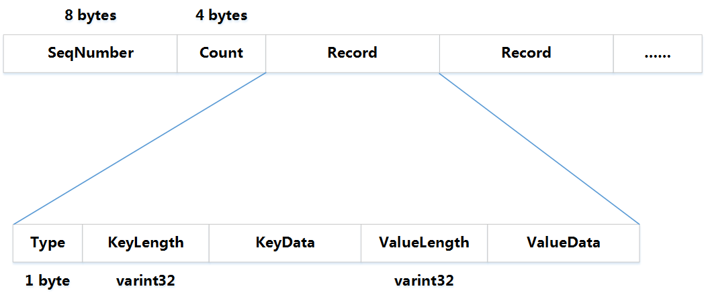

LevelDB 的 GroupCommit 实现
条评论LevelDB是BigTable中对SSTable的实现，是一个高性能的单机版Key-Value存储库。LevelDB在一个进程中，允许多个线程同时读写一个SSTable。本文主要关注多个线程同时对LevelDB的写操作，LevelDB只支持2中写操作，即Put和Delete。由于LevelDB支持WAL，也就是说每次写操作都会记录日志。多个线程同时执行时，LevelDB内部通过同步确保写操作串行执行，那么是不是每次操作的日志都要单独占用一次IO呢。在LevelDB中不会，LevelDB通过Group Commit将并发线程中的日志通过一次写完成。
LevelDB对Group
Commit的支持是通过数据结构WriteBatch（db/write_batch.h）实现的。WriteBatch是C++中的一个class，在其的结构中封装了一个std::string类型的数据成员rep_，LevelDB的所有操作都先保存到rep_中，然后才会执行相应的操作。WriteBatch相当于是对操作的暂存，是后续真正执行写操作的参数，简化的结构为
1
2
3
4class WriteBatch {
private:
std::string rep_; // See comment in write_batch.cc for the format of rep_
}

其中一次写操作的代码如下 1
2
3
4
5
6
7
8
9
10
11
12
13// Default implementations of convenience methods that subclasses of DB
// can call if they wish
Status DB::Put(const WriteOptions& opt, const Slice& key, const Slice& value) {
WriteBatch batch; //构造WriteBatch对象，初始情况下SeqNumber和Count域都是0
batch.Put(key, value); //把操作、key和value填充到batch.rpl_中
return Write(opt, &batch); //执行操作
}
Status DB::Delete(const WriteOptions& opt, const Slice& key) {
WriteBatch batch; //构造WriteBatch对象，初始情况下SeqNumber和Count域都是0
batch.Delete(key); //把操作和key填充到batch.rpl_中
return Write(opt, &batch); //执行操作
}1
2
3
4
5
6
7
8
9
10
11
12void WriteBatch::Put(const Slice& key, const Slice& value) {
WriteBatchInternal::SetCount(this, WriteBatchInternal::Count(this) + 1); //将Count域增加1
rep_.push_back(static_cast<char>(kTypeValue)); //填充操作的Type，kTypeValue的值恒为1
PutLengthPrefixedSlice(&rep_, key); //填充Key（包括KeyLength和KeyData）
PutLengthPrefixedSlice(&rep_, value); //填充Value（包括ValueLength和ValueData）
}
void WriteBatch::Delete(const Slice& key) {
WriteBatchInternal::SetCount(this, WriteBatchInternal::Count(this) + 1); //将Count域增加1
rep_.push_back(static_cast<char>(kTypeDeletion));//填充操作的Type，kTypeDeletion的值恒为0
PutLengthPrefixedSlice(&rep_, key); //填充Key（包括KeyLength和KeyData）
}
前8个字节为SeqNumber，因为在调用Write()以前，还没有生成SeqNumber，所以它的值为全0，接下来的4个字节是Count域，后面分别为Key域和Value域。在本例中，KeyData的长度为14，ValueData的长度为20。
可以看到，Put和Delete操作都是先构造一个WriteBatch对象，然后按照WriteBatch的格式填充好相应的内容，然后调用Write()执行操作。LevelDB的GroupCommit就是在这个Write()中实现的。
下面到了最核心的Write()函数： 1
2
3
4
5
6
7
8
9
10
11
12
13
14
15
16
17
18
19
20
21
22
23
24
25
26
27
28
29
30
31
32
33
34
35
36
37
38
39
40
41
42
43
44
45
46
47
48
49
50
51
52
53
54
55
56
57
58
59
60
61
62
63
64
65
66
67
68
69
70
71
72
73
74
75
76
77
78
79
80
81
82
83Status DBImpl::Write(const WriteOptions& options, WriteBatch* my_batch) {
Writer w(&mutex_);
w.batch = my_batch; //将操作放到w中
w.sync = options.sync;
w.done = false;
MutexLock l(&mutex_); //互斥
//将操作放到writes_中，writes_的类型为std::dequeue
writers_.push_back(&w);
//由于在后面，mutex_可能提前释放，在多线程环境下，有可能有多个writer同时进入队列，就会形成GroupCommit
while (!w.done && &w != writers_.front()) {
w.cv.Wait();
}
if (w.done) { //有可能被其他的线程在GroupCommit时执行完成
return w.status;
}
// May temporarily unlock and wait.
Status status = MakeRoomForWrite(my_batch == NULL); //有可能调用Compaction
uint64_t last_sequence = versions_->LastSequence(); //生成SeqNumber
Writer* last_writer = &w;
if (status.ok() && my_batch != NULL) { // NULL batch is for compactions
//将writes_中所有等待的batch全部提取出来，放到一个batch中，就是这里的updates
WriteBatch* updates = BuildBatchGroup(&last_writer);
WriteBatchInternal::SetSequence(updates, last_sequence + 1); //设置SeqNumber
last_sequence += WriteBatchInternal::Count(updates);
// Add to log and apply to memtable. We can release the lock
// during this phase since &w is currently responsible for logging
// and protects against concurrent loggers and concurrent writes
// into mem_.
{
mutex_.Unlock(); //提前释放mutex
//将日志写文件，GroupCommit时，并发的Put和Delete可能只需要一次日志写操作
status = log_->AddRecord(WriteBatchInternal::Contents(updates));
bool sync_error = false;
if (status.ok() && options.sync) {
status = logfile_->Sync();
if (!status.ok()) {
sync_error = true;
}
}
if (status.ok()) {
status = WriteBatchInternal::InsertInto(updates, mem_); //将操作更新到memtable中
}
mutex_.Lock();
if (sync_error) {
// The state of the log file is indeterminate: the log record we
// just added may or may not show up when the DB is re-opened.
// So we force the DB into a mode where all future writes fail.
RecordBackgroundError(status);
}
}
if (updates == tmp_batch_) tmp_batch_->Clear();
versions_->SetLastSequence(last_sequence); //更新SeqNumber
}
//将本次批量操作的writer都标记为done
while (true) {
Writer* ready = writers_.front();
writers_.pop_front();
if (ready != &w) {
ready->status = status;
ready->done = true;
ready->cv.Signal();
}
if (ready == last_writer) break;
}
// Notify new head of write queue
if (!writers_.empty()) {
writers_.front()->cv.Signal();
}
return status;
}